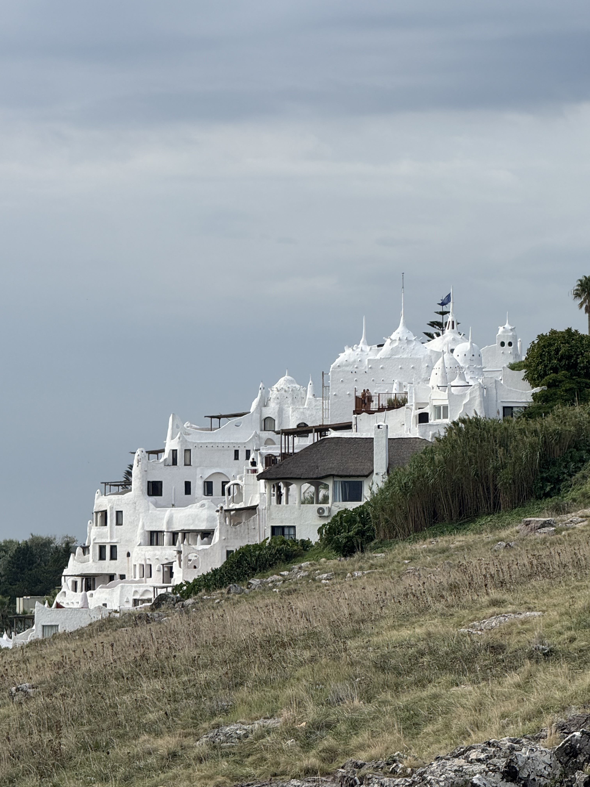
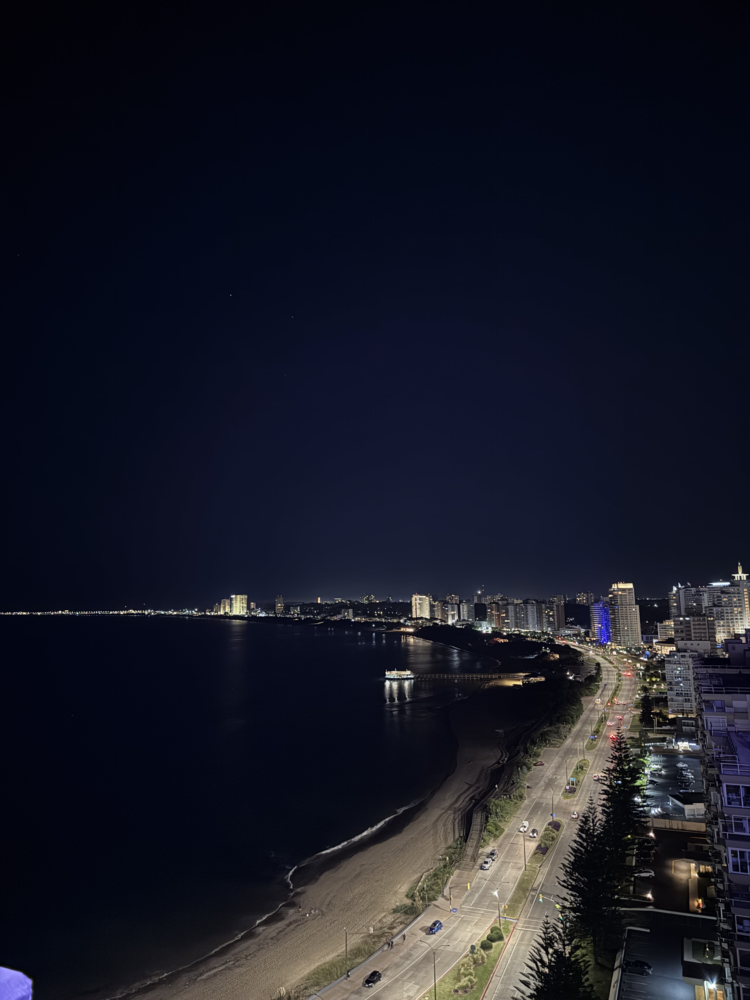
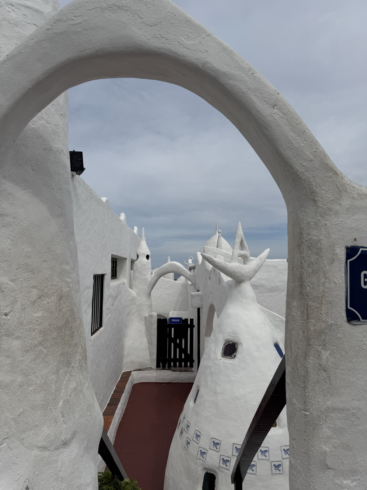

Uruguay

Desde la costa se veía muy bien la forma de Casapueblo.

Visité Los Dedos de noche y estaban iluminados.

Así se veía la costa de Punta del Este desde el restaurante mas alto del pais.
Grabé este atardecer tranquilo en la playa de Punta Ballena.

Me gustaron mucho las formas y los pasillos blancos de Casapueblo.